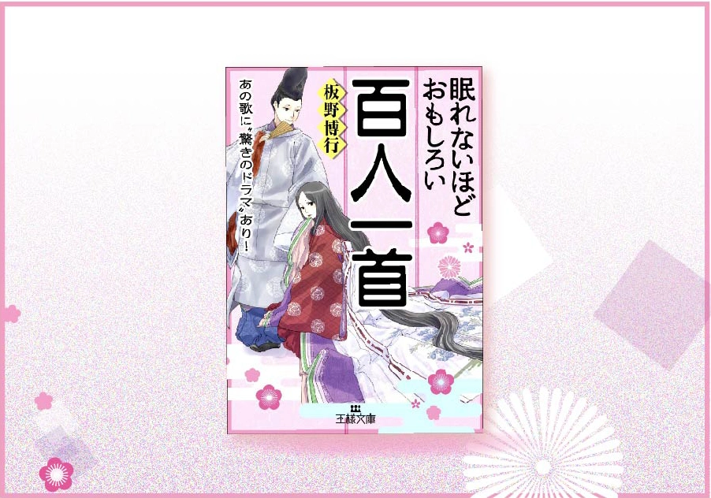

※本サイトにはプロモーションが含まれています。
アイテム
2024.11.6
2024.11.1
レビュー記事：百人一首に興味を持ったら、何を読めばいいの？なあなたに。参考書籍紹介ブログ

この記事で知れること
- ✓ 百人一首に興味持ったけど、何かおすすめの本が知りたい
- ✓ 和歌作った人たちて、どんんあ人たちだったのか紹介している本が知りたい
- ✓ ざっくり、百人一首を紹介する本が知りたい
- ✓ この本の魅力は何か。
眠れないほど面白いシリーズから「眠れないほど面白い百人一首」
より親近感を持ってもらうという卒業制作のヒントにもなった文庫本です。 これがなかったらこのサイトは無い。（このシリーズ、実は万葉集や古事記のシリーズもあって、今はそっちもつまみ食いしています。） 以下からポイントごとにこの本の魅力を紹介していきます。
百人一首を身近に感じられる
この本のおすすめポイントはなんと言っても「知り合いのことを話すかのような語り口調の歌＆歌人紹介」です。以下はその例です。
89番の「玉の尾よ・・・」を書いた女性、式子内親王。彼女を説明する言葉では、「ボクの父（藤原俊成・83番）に師事された・・・」とか、「彼女はすでに30歳をこえていたけど、素敵な人だったなあ」など、「ボク」や「素敵な人だった」など実際に会ったような語り口調の文体です。
紫式部に関しては、源氏物語からきている名前の由来や、「大恋愛スペクタクル巨編」と称して当時の人々にも反響があったことを記している。
作った作者の1人称で、100の歌と歌人を紹介
本文のほとんどが、百人一首の作者、97番の藤原定家による語り口調で綴られた文章です。そのため「百人一首の歌人たち」という昔の人の距離感をなくし、より親近感を持って彼らの話を聞くことができるのです。
歌の生まれた経緯を詳細に説明してくれる
歌にもよりますが、それぞれの歌が作られたきっかけも含めて紹介してくれます。学校の授業で覚えることが必要な場合は歌が作られるエピソードを知ることでより覚えやすくなりますよ。
自分の知り合いの話をするかの様な語り口調の文体
より身近に感じられるキーポイントとしてはその文体にもあります。この本のメイン部分である歌の説明は藤原定家の語り口調です。
歌はジャンル分けされた項目順に紹介。ジャンルテーマも小粋な分類分け
各テーマの章ごとに歌を紹介。あなたは「どの扉」から開きますか？
この本では紹介順にも親しみやすさが込められています。100種の歌を作者の情緒的な感性でカテゴライズされ、紹介されています。多くの百人一首の紹介は通し番号順であるため、よ「秋の田の」の歌が曖昧な記憶に残っている（元も含め）学生さんも多いでしょう。本書のトップバッターは8番です。早速違います。通し番号ではなく、自分の好きなテーマからつまみ食いしていくことをすすめている構成となっています。そのため、新しい切り口で、思っても見なかった形で意外な歌に興味を持つことができるかもしれません。 おすすめは、巻頭の目次で、それぞれの章の惹かれるテーマから読みすすめる です。
著者:板野博行
百人一首に興味を持った人向けにおすすめな書籍を紹介しました。いかがでしたか？こうした本をきっかけに、百人一首の歌や人物にもっとのめり込んでいただければ嬉しいです！
作成・運営紹介

ゆきこ
美大の通信の卒業課題でつくった百人一首のコンテンツ。その当時は技術が追い付かず、DTP（印刷）でのメディア媒体として打ち切りましたが、数年越しにWEB上にコンテンツをたちあげ、コツコツ発信しようと現在進行形で進めています。イラスト、ロゴなどからwebサイトまで作成可能。本のさしえの様なイラストから、結婚式のウエルカムボードまで描けます。ご興味ありましたらご連絡いただければうれしいです！